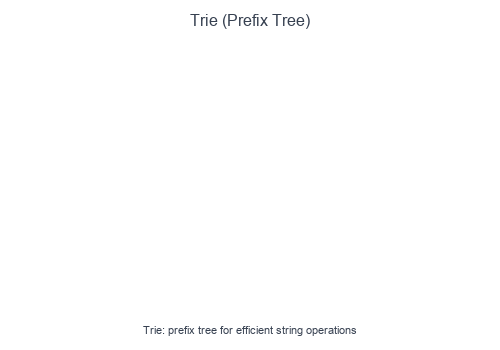

Introduction to Trie
A Trie (prefix tree) is a tree-like data structure for efficient storage and retrieval of strings. Each node represents a character, and paths from root to nodes represent prefixes. Tries excel at prefix-based operations.
Visual Example
Trie Insert and Search

Words share common prefixes in the tree structure. Searching "app" traverses a→p→p. A marker indicates complete words vs. prefixes.
Structure
root
/ | \
a b c
/
p
/ \
p e (ape✓)
|
l
|
e (apple✓)
When to Use
- Autocomplete / search suggestions.
- Spell checking.
- Prefix matching (find all words starting with X).
- Word validation in games (Boggle, Scrabble).
- IP routing (longest prefix match).
- Counting unique prefixes.
Core Operations
| Operation | Time | Description |
|---|---|---|
| Insert | $O(m)$ | Add word of length m |
| Search | $O(m)$ | Check if word exists |
| StartsWith | $O(m)$ | Check if prefix exists |
| Delete | $O(m)$ | Remove word |
Pattern Recipe
- Node structure: Dictionary of children + end-of-word marker.
- Insert: Create nodes for each character if not present.
- Search: Traverse character by character; check end marker.
- Prefix: Same as search but don't check end marker.
Short Examples — Python
Basic Trie Implementation
class TrieNode:
def __init__(self):
self.children = {}
self.is_end = False
class Trie:
def __init__(self):
self.root = TrieNode()
def insert(self, word: str) -> None:
node = self.root
for char in word:
if char not in node.children:
node.children[char] = TrieNode()
node = node.children[char]
node.is_end = True
def search(self, word: str) -> bool:
node = self._find_node(word)
return node is not None and node.is_end
def starts_with(self, prefix: str) -> bool:
return self._find_node(prefix) is not None
def _find_node(self, prefix: str) -> TrieNode:
node = self.root
for char in prefix:
if char not in node.children:
return None
node = node.children[char]
return node
# Usage:
# trie = Trie()
# trie.insert("apple")
# trie.search("apple") → True
# trie.search("app") → False
# trie.starts_with("app") → True
Trie with Word Count
class TrieWithCount:
def __init__(self):
self.root = {}
def insert(self, word: str) -> None:
node = self.root
for char in word:
node = node.setdefault(char, {})
node['#'] = node.get('#', 0) + 1 # Count occurrences
def count_word(self, word: str) -> int:
node = self.root
for char in word:
if char not in node:
return 0
node = node[char]
return node.get('#', 0)
def count_prefix(self, prefix: str) -> int:
"""Count all words with this prefix."""
node = self.root
for char in prefix:
if char not in node:
return 0
node = node[char]
return self._count_all(node)
def _count_all(self, node: dict) -> int:
count = node.get('#', 0)
for char, child in node.items():
if char != '#':
count += self._count_all(child)
return count
Word Search II (Find all words in board)
def find_words(board: list[list[str]], words: list[str]) -> list[str]:
# Build trie from word list
trie = {}
for word in words:
node = trie
for char in word:
node = node.setdefault(char, {})
node['$'] = word # Store complete word
rows, cols = len(board), len(board[0])
result = set()
def backtrack(r: int, c: int, node: dict):
char = board[r][c]
if char not in node:
return
next_node = node[char]
# Found a word
if '$' in next_node:
result.add(next_node['$'])
# Mark visited
board[r][c] = '#'
# Explore neighbors
for dr, dc in [(0,1), (0,-1), (1,0), (-1,0)]:
nr, nc = r + dr, c + dc
if 0 <= nr < rows and 0 <= nc < cols and board[nr][nc] != '#':
backtrack(nr, nc, next_node)
board[r][c] = char # Restore
for r in range(rows):
for c in range(cols):
backtrack(r, c, trie)
return list(result)
Autocomplete System
class AutocompleteSystem:
def __init__(self, sentences: list[str], times: list[int]):
self.trie = {}
self.current_input = ""
for sentence, count in zip(sentences, times):
self._insert(sentence, count)
def _insert(self, sentence: str, count: int):
node = self.trie
for char in sentence:
node = node.setdefault(char, {})
node['#'] = node.get('#', 0) + count
def input(self, c: str) -> list[str]:
if c == '#':
self._insert(self.current_input, 1)
self.current_input = ""
return []
self.current_input += c
# Find all sentences with current prefix
node = self.trie
for char in self.current_input:
if char not in node:
return []
node = node[char]
# Collect all completions
results = []
self._collect(node, self.current_input, results)
# Return top 3 by frequency, then alphabetically
results.sort(key=lambda x: (-x[0], x[1]))
return [s for _, s in results[:3]]
def _collect(self, node: dict, prefix: str, results: list):
if '#' in node:
results.append((node['#'], prefix))
for char, child in node.items():
if char != '#':
self._collect(child, prefix + char, results)
Replace Words (Dictionary with prefixes)
def replace_words(dictionary: list[str], sentence: str) -> str:
# Build trie of roots
trie = {}
for root in dictionary:
node = trie
for char in root:
node = node.setdefault(char, {})
node['#'] = root
def find_root(word: str) -> str:
node = trie
for char in word:
if '#' in node:
return node['#'] # Found shortest root
if char not in node:
return word # No root found
node = node[char]
return node.get('#', word)
return ' '.join(find_root(word) for word in sentence.split())
# dictionary = ["cat", "bat", "rat"]
# sentence = "the cattle was rattled by the battery"
# → "the cat was rat by the bat"
Trie vs HashMap
| Aspect | Trie | HashMap |
|---|---|---|
| Prefix search | O(m) | O(n × m) scan all keys |
| Exact lookup | O(m) | O(m) average |
| Autocomplete | Natural | Requires extra work |
| Memory | Higher (pointers) | Lower |
| Sorted iteration | In-order traversal | Need to sort |
Common Pitfalls
- Forgetting the end-of-word marker (mixing up prefix vs complete word).
- Not handling empty strings.
- Memory leaks when deleting (orphan nodes).
- Using wrong data structure for children (dict vs array).